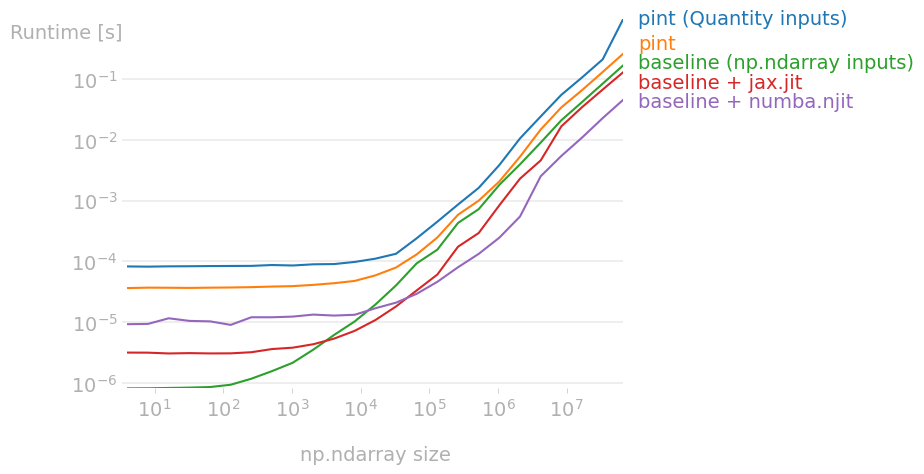

Design
isqx tries not to follow the patterns of existing units of measurement (UoM)
libraries: it prioritises incremental adoption over runtime enforcement.
It is inspired by libraries like:
annotated-typesandfastapi, which popularised the use of metadata objects withtyping.Annotated,impunity, which also useAnnotatedto enforce dimension correctness.
Why do existing UoM libraries not proliferate?¤
McKeever et al. (2020) cited the main reasons being "solutions interfere with code too much" (31%) and the "effort of learning" (28%). The frustrations are best captured by the survey responses:
- "We depend on a number of libraries (
PETSc,Eigen...) that interact very poorly with UoM libraries." - "Very few languages have the affordances to make numbers with units both statically type-checked and as ergonomic to pass in and out of functions as bare numbers."
- "I tried working with
Boost.Unitsmultiple times ... simply setting up the whole system took more time than I had to invest." - "I recently helped develop the simulation of fluid flow in Fortran and nobody ever asked for units anywhere, but everyone was really interested in performance."
- "manual conversions functions covered most use cases"
isqx is designed to be opt-in only, decoupling the unit from the runtime value.
It builds upon the idea of what's already excellent: writing docstrings
orthogonal to the code responsible for computation.
Problem 1: The friction of newtypes¤
Most UoM libraries, especially in compiled languages like
C++ Boost::Units and
Rust uom, model a "wrapper" or
"newtype" around a numerical value. This pattern uses the type system to enforce
dimensional correctness at compile-time, promising zero runtime overhead.
struct Quantity<V, U> {
value: V, // a numerical value: float, int...
units: PhantomData<U>, // zero-sized "ghost", erased at runtime
}
// operator overloads to enforce rules
impl<Ul, Ur, V> Mul<Quantity<V, Ur>> for Quantity<V, Ul> { /* ... */ }
// ... and so on for `Div`, `Add`, `Sub` ...
let length = Length::new::<meter>(1.0);
let time = Time::new::<second>(3.0);
let speed = length / time; // ok, `Div` is implemented
let nonsense = length + time; // compile error
While powerful, this newtype is immediately incompatible with the vast majority
of external libraries that expect a raw numerical type (float, np.ndarray...).
Users are forced to constantly unwrap the quantity and re-wrap it at every single
function boundary, leading to the frustrations described earlier.
Case study: pint
Python is a dynamic language with an optional (and relatively weak) type system. Trying to model this newtype pattern at runtime with operator overloads brings even more friction.
Imagine developing a simple library with pint:
from pint import UnitRegistry
ureg = UnitRegistry()
RHO_0 = 1.225 * (ureg.kilogram * ureg.meter**-3)
"""Density of air at mean sea level"""
def eas(tas, air_density):
"""Converts TAS to EAS.
:param tas: true airspeed (meters per second)
:param air_density: atmospheric density (kilograms per meter cubed)
:returns: equivalent airspeed (meters per second)
"""
return tas * (air_density / RHO_0) ** 0.5
Since RHO_0 (a pint.Quantity) implements the __array_ufunc__ protocol,
any numpy-like array inputs should be not cause any problem.
A downstream user, unfamiliar with pint, might perform a standard data
processing task:
>>> import airspeed
>>> import polars as pl
>>> import numpy as np
>>> df = pl.DataFrame({
... "air_density": np.linspace(0.5, 1.13, 100),
... "tas": np.linspace(200, 130, 100)
... })
>>> eas = airspeed.eas(df["tas"], df["air_density"])
return tas * (air_density / RHO_0) ** 0.5
~~~~~~~~~~~~^~~~~~~
TypeError: cannot convert Python type 'pint.Quantity' to Float64
>>> # ok, maybe it wants numpy arrays instead.
>>> eas = airspeed.eas(df["tas"].to_numpy(), df["air_density"].to_numpy())
>>> df = df.with_columns(eas=eas)
TypeError: cannot create expression literal for value of type Quantity.
Hint: Pass `allow_object=True` to accept any value and create a literal of type
Object.
>>> eas # what is a `Quantity`?
<Quantity([127.775313 ... 124.85746976], 'meter ** 1.5 / kilogram ** 0.5')>
The user might expect a numpy input to return a numpy output, but what
they got was a new Quantity wrapper with nonsensical units. After reading
the docs, the user understands to pass in a Quantity instead:
>>> u = airspeed.ureg
>>> tas_with_u = df["tas"].to_numpy() * (u.meter * u.second**-2)
>>> densities_with_u = df["air_density"].to_numpy() * (u.kilogram * u.meter**-3)
>>> eas = airspeed.eas(tas_with_u, densities_with_u)
>>> eas
<Quantity([127.775313 ... 124.85746976], 'meter / second ** 2')>
>>> # units are correct, create a df but make sure to get the magnitude
>>> df = df.with_columns(eas=eas.m)
Which works well, but the user had to guess whether the library supports a
Quantity input. Will it support scipy.optimize? Or einops.einsum?
Maybe, maybe not.
The burden is not just on the user, but also the authors. Having to provide
support for the ever-changing APIs of the entire Python ecosystem within the
Quantity newtype is impossible.
The user might also want to compute the gradient of eas and try to speedup
the code with JIT, only to come to even more roadblocks:
>>> import jax
>>> jax.vmap(jax.grad(airspeed.eas))(tas_with_u, densities_with_u)
TypeError: Argument '[200.0 ... 130.0] meter / second ** 2' of type
<class 'pint.Quantity'> is not a valid JAX type.
>>> jax.vmap(jax.grad(airspeed.eas))(tas_with_u.m, densities_with_u.m)
TypeError: Argument 'Traced<float32[100]>with<JVPTrace> with
primal = Array([127.775314, ..., 124.85747 ], dtype=float32)
tangent = Traced<float32[100]>with<JaxprTrace> with
pval = (ShapedArray(float32[100]), None)
recipe = JaxprEqnRecipe(eqn_id=0, ...) meter ** 1.5 / kilogram ** 0.5'
of type '<class 'pint.Quantity'>' is not a valid JAX type
>>> jax.jit(airspeed.eas)(tas_with_u.m, densities_with_u.m)
TypeError: function eas at /home/user/airspeed.py:7 traced for jit returned a
value of type <class 'pint.Quantity'>, which is not a valid JAX type
>>> import numba
>>> numba.jit(airspeed.eas)(tas_with_u.m, densities_with_u.m)
Untyped global name 'RHO_0': Cannot determine Numba type of
<class 'pint.Quantity'>
Quantity newtype.
bench script
# mypy: ignore-errors
from pint import UnitRegistry
ureg = UnitRegistry()
RHO_0 = 1.225 * (ureg.kilogram * ureg.meter**-3)
"""Density of air at mean sea level"""
def eas(tas, air_density):
"""Converts TAS to EAS.
:param tas: true airspeed (meters per second)
:param air_density: atmospheric density (kilograms per meter cubed)
:returns: equivalent airspeed (meters per second)
"""
return tas * (air_density / RHO_0) ** 0.5
RHO_0_PURE_PY = 1.225
def eas_pure_py(tas, air_density):
return tas * (air_density / RHO_0_PURE_PY) ** 0.5
#!/usr/bin/env -S uv run --script
# /// script
# requires-python = ">=3.9"
# dependencies = [
# "jax",
# "numpy",
# "perfplot",
# "numba",
# "pint"
# ]
# ///
# mypy: ignore-errors
from pathlib import Path
import jax
import numpy as np
import perfplot
from airspeed import eas, eas_pure_py, ureg
from numba import njit
def setup(n):
tas_np = np.random.rand(n) * 250 + 50
density_np = np.random.rand(n) * 0.825 + 0.4
return tas_np, density_np
def run_pint_quantity_in(tas_np, density_np):
tas_pint = tas_np * (ureg.meter / ureg.second)
density_pint = density_np * (ureg.kilogram / ureg.meter**3)
result_pint = eas(tas_pint, density_pint)
return result_pint.magnitude
def run_pint_numpy_in(tas_np, density_np):
result_pint = eas(tas_np, density_np)
return result_pint.magnitude # NOTE: wrong units
def run_numpy(tas_np, density_np):
return eas_pure_py(tas_np, density_np)
eas_jax_jit_cpu = jax.jit(eas_pure_py, backend="cpu")
eas_numba_jit = njit(eas_pure_py, parallel=True, nogil=True, cache=True)
def run_jax_cpu(tas_np, density_np):
return eas_jax_jit_cpu(tas_np, density_np)
def run_numba(tas_np, density_np):
return eas_numba_jit(tas_np, density_np)
def main(path_root: Path = Path(__file__).parent):
n_range = [2**k for k in range(2, 27)]
for n in n_range: # precompile
run_jax_cpu(*setup(n))
run_numba(*setup(n))
out = perfplot.bench(
setup=setup,
kernels=[
run_pint_quantity_in,
run_pint_numpy_in,
run_numpy,
run_jax_cpu,
run_numba,
],
n_range=n_range,
labels=[
"pint (Quantity inputs)",
"pint",
"baseline (np.ndarray inputs)",
"baseline + jax.jit",
"baseline + numba.njit",
],
xlabel="np.ndarray size",
equality_check=np.allclose,
)
out.save(path_root / "bench.png", transparent=True, bbox_inches="tight")
out.show()
if __name__ == "__main__":
main()
Python shines in its flexibility. Introducing a hard dependency on the
Quantity newtype interferes too much with what we're trying to achieve, and
isqx crucially avoids using the newtype pattern in the first place.
Problem 2: Quantities of the same dimension but different kinds¤
Documenting code with units alone are often insufficient
(see README). For example, annotating a function
parameter with Joules is too ambiguous: using
the change in internal energy (joules) is far more precise.
Surprisingly, most UoM libraries only offer units to work with (see
pint#551).
isqx tackles this with two key ideas:
- units can be "refined":
J["work"]andJ["heat"]both still representJoules, but additional metadata stored within the expression makes sure they are not interchangeable. - downstream users should be able to pick the unit they prefer
(
MJ,GJ,Btu...) easily.
The former idea is implemented with isqx.Tagged, responsible for binding
arbitrary metadata to a unit. Its design is strongly inspired by
typing.Annotated itself, providing a very flexible system to specify what they
want. Expr.__getitem__ provides an ergonomic way to "refining" an existing
unit.
The latter idea is implemented with the isqx.QtyKind factory, which also
stores the metadata but makes the unit "generic". QtyKind.__call__ with any
user-defined, dimensionally-compatible unit produces a isqx.Tagged
expression.
Reusing Tagged¤
When users write x: Annotated[float, M], it naturally reads: "the numeric
value of x is a point/measurement on the meter scale". But where is the
origin of the meter scale defined? Should the altitude be measured w.r.t.
to the center of the Earth, or above mean sea level, or above the ground
elevation?
Another point of confusion is that it can also be interpreted as: "the numeric
value of x represents the difference in length between two points on the meter
scale (position-independent)".
Because isqx.Tagged can store any hashable object, one can use the
isqx.OriginAt or isqx.DELTA tags to reduce ambiguity.
Note on QtyKind¤
One important caveat is that while isqx.Expr can be composed with each
other to form a "larger tree", isqx.QtyKind cannot be further composed.
This may sound surprising: wouldn't something like force = mass * acceleration,
kinetic_energy = 0.5 * mass * velocity**2 be an ergonomic way of defining new
quantities?
While it makes sense to do so, isqx avoids this because many quantities are not
defined by simple products of powers:
| Quantity Kind | Definition | Additional expression nodes needed |
|---|---|---|
| work | \(W = \int_C \mathbf{F} \cdot d\mathbf{s}\) | integral, dot product |
| enthalpy | \(H = U + pV\) | addition, subtraction |
| isentropic exponent | \(-\frac{V}{\rho} \left(\frac{\partial p}{\partial V}\right)_S\) | partial derivatives |
| poynting vector | \(\mathbf{S} = \mathbf{E} \times \mathbf{H}\) | cross product |
| complex power | \(\underline{S} = \underline{U} \underline{I}^*\) | complex conjugate |
We would have to build another SymPy just to define a quantity kind and resolve
its units. mp-units tries to do exactly this, but it resorts to simplifying or
ignoring operations that are too hard to model.
isqx tries to keep it simple by storing its definitions in a separate (and
optional) details dictionary under the isqx.details
module instead. Our documentation uses a custom mkdocstrings-python and
griffe plugin to scan for expressions, generate cross-references. It is also
emits an JSON file for the visualiser.
Problem 3: Exact representation and formatting¤
Consider the unit for fuel economy, miles per gallon. Dimensionally, this is equivalent to the inverse area: \(\frac{\mathsf{L}}{\mathsf{L}^3} = \mathsf{L}^{-2}\).
Many runtime libraries would eagerly simplify MPG to a base form like m⁻²
to improve performance in dimensional checks. This however, loses the
human-readable intent.
isqx preserving the exact tree representation.
This allows the formatted output to be exactly in the form the user defined it.
FAQ¤
What's the point if there is no runtime checks?¤
Since
xinAnnotated[T, x]are ignored by the Python interpreter and you're not usingxfor checking dimension errors, isn'tisqxjust glorified comments?
Yes. isqx provides a machine-readable, centralised vocabulary for documentation.
It avoids the "newtype" friction by decoupling the documentation from the
runtime value.
Expressive, unambiguous documentation can significantly reduce accidental errors without imposing runtime or interoperability costs.
In that case, why not just use
pint.UnitwithinAnnotated, without theQuantitywrapper?
Indeed, many existing libraries already has solid support for units. However, painpoints boil down to:
- inability to define quantity kinds
- odd ways to define new units (e.g. modifying a file with DSL)
- no intersphinx
- LSP: inability to "jump to definition" all the way to its base units
isqx tries to be minimal.
What about parsing the Python AST and collecting all
xin functions or dataclasses, and building a static analyzer?
This is a direction that impunity
explored.
However, building a useful static analyser that doesn't produce too many false positives is very difficult. Some challenges include:
- Complicated functions:
numpy.fft.fft: The relationship between the input and output units is non-trivial: if the input signal is involtsover an implicit time domain, then the output is involt-secondsover an implicit frequency domain.einops.einsum: The operation is defined by a string likeij,jk->ik. The analyzer would need to parse and interpret this string notation to understand which tensor operation is being performed before it could even begin to calculate the output unit.
- Complicated data structures like
polars.DataFramemay have different units for different columns. Should we supportpandera's approach, or have a more generic way to annotate multidimensional arrays likexarray? - Ambiguous operations: Should adding a
heightandthicknessbe an error? ISO 80000 permits this, but it might be physically questionable in some contexts (e.g.force in the x direction+force in the y direction)
isqx provides the necessary expressiveness to build a smart static analyzer.
If one is built, it should learn from the success of gradual typing systems
like mypy and offer configurable strictness levels.
Why are details stored in a separate isqx.details module?¤
Some quantity kinds are defined in terms of quantity kinds that are defined later. For example, action [ISO 80000-3] is defined in terms of work [ISO 80000-5]. We can either:
- couple details with the
isqx.QtyKindand forward-reference with strings - define all
isqx.QtyKinds first and define definitions separately.
The latter is adopted because:
- LSP support is far better: enables go-to-definition interactions. refactoring will be far easier.
- Our mkdocs plugin will be able to easily build cross-references
- Extensibility: downstream users can easily append their own domain-specific definitions.
- Performance: avoids loading non-critical information on
import isqx. USD <-> HKDis not fixed
Similarly, the formatting of expressions are decoupled from their definitions for the same reason. Users might want to maintain their own set of symbols/locales and we don't want downstream users to have to monkeypatch classes.
How can I parse units from a string?¤
isqx does not come with a built-in parser because there are endless variety of
formats:
- plain text
- different flavours of \(\LaTeX\),
- locale/subfield-specific symbols
- user defined custom tags
However, the expression tree of isqx can be used as a target for a custom
parser. A simple recursive descent or Pratt parser can be written to transform
a string into a isqx.Expr object.
Having to define M = Annotated[_T, isqx.M] is annoying. Why not make isqx.M a type instead of object?¤
Unfortunately, there is no way to create our own Annotated and have
static type checkers understand it. One possible path is:
from typing import TypeVar, Generic, Annotated, Any
from typing_extensions import _AnnotatedAlias
T = TypeVar("T")
class Expr(Generic[T]):
# mimic what `typing.Annotated` does
def __class_getitem__(cls, params) -> Annotated[T, Any]:
return _AnnotatedAlias(params, (cls,))
class M(Expr): # define meter as a type, not a runtime object
pass
print(M[int]) # this indeed produces an `Annotated` at runtime
# typing.Annotated[int, <class '__main__.M'>]
# unfortunately mypy does not understand this as an `Annotated` special form:
def foo(bar: M[int], baz: M[float]):
return bar / baz
# main.py:16: error: "M" expects no type arguments, but 1 given [type-arg]
# main.py:17: error: Unsupported left operand type for / ("M") [operator]
# Found 2 errors in 1 file (checked 1 source file)